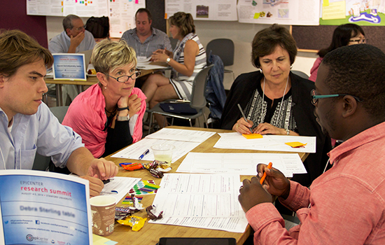
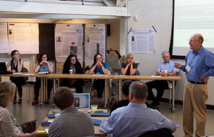
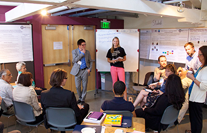
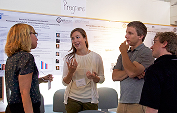

Educators, researchers and students gathered at Stanford University in August for the first Epicenter Research Summit on the topic of entrepreneurship and innovation in engineering education. View presentations, photos and other resources from the Epicenter Research Summit »

Seventy faculty, researchers and students traveled to Stanford University in August for a two-day summit to discuss research on entrepreneurship, innovation and engineering education.
The event was held August 4-5, 2014, and hosted by the National Center for Engineering Pathways to Innovation (Epicenter). The goal of the event, Epicenter’s first research gathering of this scale, was to connect participants working on similar questions, forge new collaborations, share methodologies and findings, and inspire new questions and areas of research.
“We wanted to bring together smart people who are thinking about these issues to see what they could learn from one another and define what critical gaps exist in this space,” said Sheri Sheppard, Epicenter’s Co-Principal Investigator and leader of the research team, and Professor of Mechanical Engineering at Stanford University.
Dr. Helen Chen and Dr. Shannon Gilmartin, Epicenter Research Scientists, co-organized the event. Summit co-hosts were Professor Mary Besterfield-Sacre of the University of Pittsburgh, Professor Nathalie Duval-Couetil of Purdue University, Professor Bill Damon of Stanford University, and Dr. Anne Colby of Stanford University.
The mission of Epicenter, which is funded by the National Science Foundation and directed by Stanford and VentureWell (formerly NCIIA), is to help engineering students learn to be more entrepreneurial and innovative.
“In engineering education, we need an entrepreneurial mindset,” said Doug Melton, Kern Entrepreneurship Education Network (KEEN) program director for The Kern Family Foundation. “An entrepreneurial mindset applies to every situation, no matter whether it’s engineering, or whether it’s in a new venture, or whether it’s in an existing corporation.”
Although attendees shared the goal of helping engineers learn an entrepreneurial mindset in a broad sense, they approached it in many different ways; this area of study is just as diverse and multi-faceted as the backgrounds and interests of the summit attendees themselves.
Attendees from 29 institutions and organizations came from fields ranging from engineering to psychology to design. The gathering attracted faculty members and administrators, undergraduate students, graduate students, postdocs, and research and evaluation specialists from the U.S. and Europe. Some are researchers, while others are practitioners, and many are both. Some are working on questions around program creation, learning environments, and curriculum and pedagogy. Attendees included students in Epicenter's University Innovation Fellows program and faculty in Epicenter's Pathways to Innovation Program.

Engineering students themselves are another area of focus; several researchers are examining methods for measuring the entrepreneurial mindset of students and understanding students’ perception of risk. Still others are exploring students’ post-graduation plans and whether these plans include entrepreneurial ventures.
Nathalie Duval-Couetil, Director of Purdue’s Certificate in Entrepreneurship and Innovation Program and Associate Professor of Technology Leadership and Innovation, has two big questions in the field of entrepreneurship education delivered to engineering students. “One: how do you get faculty to integrate it into a very packed curriculum; and two: how does entrepreneurship education manifest itself in a student’s career?”
To help answer these questions, Duval-Couetil is working on a number of projects, including trying to align entrepreneurial learning outcomes with ABET accreditation outcomes, and conducting interviews with students involved in entrepreneurship programs to find out how they are applying their entrepreneurship education.

Assessment was another common area of interest at the summit. “One of the things that we find is a challenge in entrepreneurship education is assessment,” said Kathryn Jablokow, Associate Professor of Mechanical Engineering and Engineering Design at Pennsylvania State University. “Our research is focused on assessing the students and the qualities that will make them successful as entrepreneurs and innovators.”
Members of Epicenter’s own research team are examining several aspects of this field as well, focusing their three research questions on factors involved in entrepreneurship program creation and scaling, how engineering students think and act entrepreneurially, and how to include entrepreneurship in a traditional engineering class.
“We’re seeing students get excited when they see how their technical education fits into the broader picture,” Sheppard said. “We’re also seeing challenges because engineering faculty haven’t necessarily been educated to teach entrepreneurship. So how do we provide scaffolding for faculty to learn to teach this?”
Session topics at the summit included students’ entrepreneurial development, research on programs and curricular approaches, and the landscape of the field. Participants took part in workshops to address how students could help come up with new research ideas and collaborated in groups to form brand new research questions.

Several big questions and takeaways emerged. One realization was the importance of students in the research process. More than just subjects of research, students’ unique perspectives and enthusiasm make valuable collaborators in the process. Other themes and questions that participants discussed were how to define and evaluate a student’s entrepreneurial mindset, the connections between (and definitions of) entrepreneurship and innovation, and the barriers students face when trying to launch companies while still in school.
The value of bringing this community together is immense and widespread. The impact is not only on engineering education, but higher education as a whole. Participants expressed interest in continuing to meet as a community, defining research needs, and reaching out to other scholars and practitioners who would like to share insights and collaborate.
Shannon Gilmartin cited Summit talk on the connections between education and industry by Susan Brennan, Chief Operating Officer of Bloom Energy, as one that drove home the importance of studying innovation and entrepreneurship in engineering from the perspective of global productivity.
“If we want to kindle the human spirit and creativity, we need to understand which learning environments are most conducive to that,” Gilmartin said.
View presentations, photos and other resources from the Epicenter Research Summit »